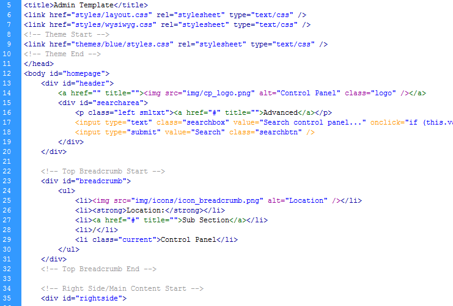

Created: 03/12/2010
By: MrDesigner
Profile:
http://themeforest.net/user/MrDesigner
Thank you for purchasing my theme. If you have any questions that are beyond the scope of this help file, please feel free to email via my user page contact form here. Thanks so much!
This theme is a fluid/resizable layout with two columns. All of the information within the main content area is nested within a div with an id of "#rightside". The sidebar's content is within a div with an id of "leftside". The general template structure is the same throughout the template. All div's have been clearly labeled, for example the breadcrumb area with have the id #breadcrumb. Here is the general structure.
I've included helpful comments throughout the code to help you identify each section.
3 colour styles have been included within this template: Blue, Reg & Green which I will exaplain how easy it is to change the colour scheme within the CSS section below
Link styles have been defined by their section, e.g. #leftside elements would have a different link colour to #rightside and the same applies for the #breadcrumb. If you would like to edit the color, font, or style of any elements in one of these columns, you would do the following:
Right main content box styles:
.contentbox a {color: #somecolour;}
Breadcrumb:
#breadcrumb a {color: #somecolour;}
etc etc...
You should be fine regarding changing colours and styles, but to ensure that your new styles are applied, make sure that they carry enough "weight" and that there isn't a style lower in the CSS file that is being applied after yours.
Section highlighting:
If you want to highlight the current section using the side navigation you will need to give the class "selected" to the li e.g.
li class="heading selected"
An example of this is included within the code of index.html
For the main content pages fo the website I'm using two CSS files, "layout.css" for the overall structure and generic elements. For the styling i'm using "/themename/styles.css" (Replace themename with colour e.g. blue, red or green). The login page also uses it's own stylesheet so you will need to include, "login.css". - this file contains structual styles, so much like the main content pages, the colours are handled within the "/themename/styles.css" so that will also need to be included.
Example: To apply different themes simply change the theme from blue to red or green, you would do so within the code here:
themes/blue/styles.css and change it to red, like so; themes/red/styles.css
This path will need to be changed on both the login.html and index.html (All other content) pages.
The layout.css file contains all of the specific stylings for the page. The file is separated into sections like so:
/* Header Elements */ [code] /* Footer */ [code] /* Top Breadcrumb */ [code] etc etc.
You will also notice within the index.html file a stylesheet called "wysiwyg.css" - you don't really need to change anything here, as it's used to style the Rich HTML/WYSIWYG editor, it can be removed if you do not intend to use the WYSIWYG editor.
If you would like to edit a specific section of the site, simply find the appropriate label in the CSS file, and then scroll down until you find the appropriate style that needs to be edited, it all should be clearly labelled.
This theme imports seven Javascript files at the bottom of the document.
// Notifications Pop-Up
$(document).ready(function(){
$("a.notifypop").bind('click', function(){
$("#notificationsbox").bPopup();
return false
});
});
Bascally what this code is saying is: when the link with the class .notifypop is clicked show the div with the id="notificationsbox" - in a lightbox. The div, #notificationsbox is included on all pages it's needed at the bottom of the page and is hidden within the property display: none; - this is definied and edited within the stylesheet.
Graphs:
I've made it so you can define different tables by adding a certain class e.g. class="pie"
(See code within the graphs examples section within index.html) would create a pie chart
from that table data. You can also adjust the width and height of the chart within the
following section within functions.js...
// Charting script
$(document).ready(function(){
$('table.pie').visualize({type: 'pie', height: '300px', width: '620px'});
$('table.bar').visualize({type: 'bar', height: '300px', width: '620px'});
$('table.area').visualize({type: 'area', height: '300px', width: '620px'});
$('table.line').visualize({type: 'line', height: '300px', width: '620px'});
});
If you would like to change the colours of graph elements, you can do so within the top of visualize.jQuery.js
colors: ['#1488AE','#9FBA34','#E28800','#A72500','#B082AC','#FF6699','#CC6600','#21A0AB','#CC0000'],
(These are in order so if you only have 4 sets of data, it would use the first 4 styles)
For more information about the charting script please visit:
http://www.filamentgroup.com/lab/update_to_jquery_visualize_accessible_charts_with_html5_from_designing_with/
I've included 3 x main Fireworks .PNG files and a folder full of editable elements to help you further changes styles easily & quickly.
To make the site highly optimised and fast loading you'll find many of the backgrounds are just 5px wide and are simply tiled horizontally to give a nice gradient effect
As mentioned above, all files have been named the same as the exported version, so you can find and export it with absolute ease.
For example:
If you'd like to change the main image in the header background, open "bg_header.png", make the necessary adjustments, and then save the file within the /img/ "bg_header.png".
I've used the following images, icons or other files as listed.
Once again, thank you so much for purchasing this theme. As I said at the beginning, I'd be glad to help you if you have any questions relating to this theme. No guarantees, but I'll do my best to assist. If you have a more general question relating to the themes on ThemeForest, you might consider visiting the forums and asking your question in the "Item Discussion" section.
MrDesigner